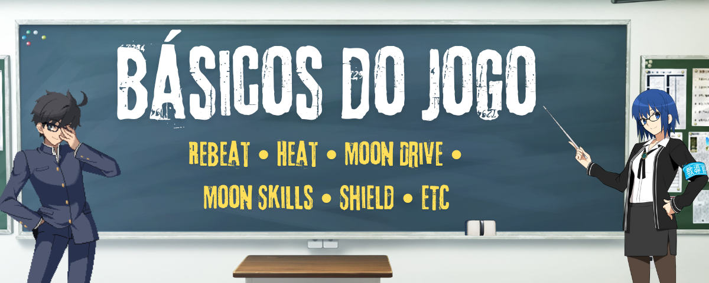
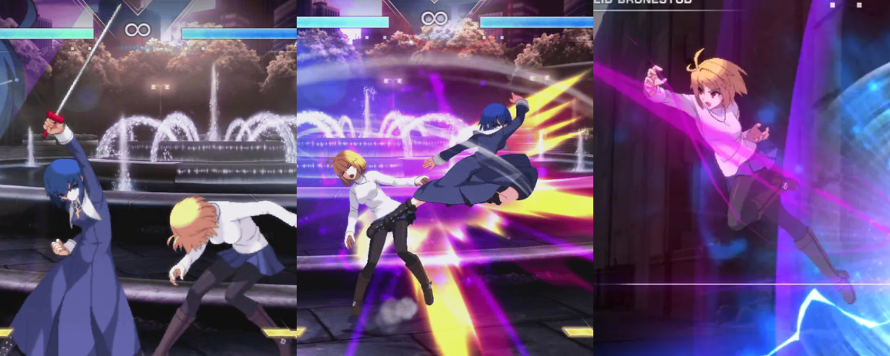

Básicos do jogo

Esta página tem como objetivo apresentar de forma resumida todas as mecânicas únicas presentes em Melty Blood: Type Lumina.
Muito do básico de Lumina pode ser transferido para outros jogos de luta e vice-versa, fazendo com o conteúdo desta seção seja de utilidade também para o público geral de jogos de luta.
Vale a recomendação também da Oficina para Iniciantes de Lumina organizada pela Reverse Beat Brasil (RBBR) e feita por Jorge, um dos melhores jogadores da comunidade e também referência tanto para jogadores de todos os níveis.
No vídeo, foram cobertos tópicos como combos, mecãnicas de jogo, personagens, guias e referências, e mais.
Rapid Beat

O Rapid Beat é o nome dado ao autocombo dentro de Lumina, ou seja, apertando A, B ou C diversas versas consecutivas o seu personagem irá fazer um combo que irá lançar o oponente para o ar, e depois terminar com um air throw (agarrão aéreo).
Uma característica interessante do Rapid Beat é que ele ajuda na consistência de combos: em situações que um certo personagem só teria golpes que mandam o oponente muito longe, é o Rapid beat que vai manter ele dentro de seu combo sem que possa escapar dessa situação. Isso chega a ser usado até mesmo com jogadores profissionais do jogo, já que alguns personagens precisam desse regularidade na parte final de seus combos.
Além disso, todos os personagens tem um golpe exclusivo utilizado somente dentro do Rapid Beat. Portanto, a recomendação é que dentro dos controles do jogo o Rapid Beat sempre deve estar ligado.
Normals e Rebeat

Vamos começar a falar dos normals. Como o próprio nome já diz, normals são os golpes comuns, apertados pelos botões  ,
,  ou
ou  e suas direções, que não são especiais ou combinação de botões. é um normal, mas não é, por exemplo, pois outras direções são apertadas antes do botão ser pressionado.
e suas direções, que não são especiais ou combinação de botões. é um normal, mas não é, por exemplo, pois outras direções são apertadas antes do botão ser pressionado.
Cada personagem possui seu conjunto de normals diferentes de acordo com suas características, focados em serem golpes rápidos, para manter o oponente a curta ou longa distância, entre outros aspectos.
Tendo isso em mente, uma mecânica na qual Melty Blood se destaca é o Reverse Beat, geralmente abreviado como Rebeat. Geralmente, em vários jogos de luta, os personagens tem a possilidade de cancelar ataques fracos em ataques mais fortes. Por exemplo, a sequência de golpes com > > ou > seriam todas possíveis nesses tipos de jogos.
Entretanto, o Rebeat permite com que ataques mais fortes possam ser cancelados em ataques mais fracos. Isso faz com que uma sequência de golpes com > ou > sejam possíveis de serem feitas, por exemplo.
Isso por si só abre um leque gigante de oportunidades para se aplicar durante as partidas: combos são feitos usando rebeats, a ofensiva e a pressão mudam totalmente quando incrementado aos rebeats, entre outros aspectos.
É uma mecânica crucial de se aprender e dominar conforme for jogando Lumina.
Magic Circuit

De forma resumida, é a barra de especiais utilizadas durante o jogo.
Pode ser utilizada com EX Specials e Heats, além de poder ser carregada segurando os botões .
Você sempre irá começar com 3 barras de Magic Circuit em uma partida, e ganhar mais uma barra assim que perder um round, ficando assim com 4 barras. Ao usar um Last Arc, porém, você perderá uma barra e voltará a ficar com 3 barras novamente.
O gerenciamento dessa barra e seus recursos em partidas é essencial para que o máximo potencial de jogo seja extraído.
Os usos de Magic Circuit e seus gastos de barra são:
- EX Specials: Os "supers" de Lumina, que gastam 1 barra de Magic Circuit.
- Arc Drive e Last Arc: Specials ainda mais fortes que os EX Specials, que gastam 3 barras de Magic Circuit;
- Last Arc: Os specials mais fortes do jogo, que gastam 4 barras de Magic Circuit. Ao utilizá-los, uma barra de Magic Circuit é perdida.
- Heat: a forma de carregar vida do jogo. Pode ser usado a partir de uma barra, e assim que esgotado irá zerar seu Magic Circuit. Quanto mais barras tiver na hora em que usar o Heat, mais vida poderá carregar.
Specials e EX Specials

Como o próprio nome já diz, são os especiais do jogo. A versão EX desses golpes é mais poderosa que as tradicionais porém gasta 1 barra de magic circuit.
Possuem usos variados de acordo com personagens, mas de modo geral são usados em combos para aumentar seu dano ou conseguirem um knockdown (colocar um oponente no chão).
Os specials possuem inputs fixos dentro do jogo, sendo os principais funcionando pela seguinte sequência de botões:
- ↓ ↓ A/B/C (22A/B/C) ,
- ↓ ↘ → A/B/C (236A/B/C) e
- ↓ ↙ ← A/B/C (214A/B/C) , sendo as variações de A, B e C definindo a força do special que está sendo usado.
Há alguns specials, os quais chamamos de DPs (Dragon Punch), que possuem invencibilidade durante o começo do golpe, e portanto também podem ser utilizados como opção defensiva em certas ocasiões. Esses golpes, porém, também são conhecidos por te deixarem bastante vulneráveis caso o oponente não seja atingido por eles.
Não são todos os personagens que possuem DPs, e geralmente esses golpes são executados utilizando a sequência de botões:
- → ↓ → A/B/C (626A/B/C) , e em alguns casos
- ↓ ↓ A/B/C (22A/B/C) .
Heat e Blood Heat

O heat é uma opção defensiva universal presente no jogo. Sua ativação é lenta, mas ainda sim é unblockable e atinge uma área grande ao redor de seu personagem.
Essa mecânica requer 1 barra para ativação. O Heat E Blood Heat e são feitos pressionando ou segurando os botões ao mesmo tempo.
Por conta de sua grande utilidade, é sempre recomendado que você tenha barra o suficiente para ter a chance de utilizar o Heat e poder escapar de situações complicadas.
Vale lembrar, entretanto, que se previsto pelo oponente (como o uso do shield, por exemplo) o Heat pode ser devidamente punido e se tornar uma opção de risco.
Entre as características principais do Heat, estão:
- É a única forma universal de carregar vida no jogo, sendo que o tanto de vida recuperável é representado pela barra de HP de cor mais escura.
- Durante o Heat é possível usar qualquer tipo de EX Special e Arc Drive.
- Após o termino do Heat, a barra de Magic Circuit será zerada. Porém, quanto mais barra o personagem tiver na hora da ativação do Heat, mais tempo ele irá durar.
- O Heat também fornece um aumento de dano para todos os personagens de 10%, com exceção da Saber, que exclusivamente ganha um aumento de dano de 15%.
Ele carrega uma maior quantidade de vida comparado ao Heat, aumenta o dano dos personagens em 20% (para a Saber, 25%), e também permite que o Last Arc seja utilizado a partir do shield com o botão , fazendo com que ele se torne uma opção mais perigosa para quem está atacando.
Arc Drive e Last Arc

Outro dos golpes característicos de Melty Blood, os Arc Drives e Last Arc são os especiais mais fortes do jogo. Geralmente são utilizados para finalização de combos e de rounds, mas há algumas exceções e características especiais para de uso (como Shiki e Saber).
Os Arc Drives precisam de 3 barras para serem utilizados, mas não se restrigem a isso, podendo ser utilizadas sempre que o personagem estiver com o Heat ativo, e é feito pela sequência de botões .
Sendo o especial mais forte do jogo, o Last Arc precisa de 4 barras para ser utilizado, estando também disponível sempre que o personagem estiver em Blood Heat. Entretanto, ao usar um Last Arc uma barra de Magic Circuit é perdida até o final da partida.
O Last Arc é executado pela sequência de botões , ou ao acertar o shield com o botão durante o Blood Heat.
Moon Skills

As Moon Skills (MS) são versões mais rápidas e fortes dos specials que gastam recursos de Moon Gauge.
Também podem ser usadas em combos, mas não se restringem a isso, podendo ser úteis em situações gerais do jogo, por conta de permitir que DPs possam ser canceláveis em pulo mesmo em whiff, fazendo com que se tornem safe, por exemplo.
As MS podem ser ativadas ao utiizar + alguma direção. De modo geral, se um personagem tem um special, ele também terá uma Moon Skill equivalente a ele.
Sua principal característica está no fato de fornecerem uma grande quantidade de Magic Circuit ao acertar uma MS. Elas também ganham de clash frames de normais carregados como 5[C] ou 5[B] , ou seja, quando em contato com algum outro normal ativo, geralmente possuem prioridade de hits e vantagem na situação, permitindo ao jogador que utilizou a MS ganhe essa disputa.
Entretanto, as Moon Skills também possuem desvantagens. A mais notável delas é o fato de não permitir ao seu usuário que use shield de volta se o oponente shieldar sua Moon Skill. Isso quer dizer que, ao shieldar uma Moon Skill, um punish à pessoa que usou tal move é garantido.
Moon Drive

Sendo uma das mecânicas de maior complexidade de Lumina, o Moon Drive (MD) é essencialmente um estado de power-up do seu personagem que gasta sua Moon Gauge. Ele é ativado ao pressionar os botões ao mesmo tempo, podendo ser cancelado de qualquer golpe, sendo necessário pelo menos 50% de sua Moon Gauge para uso. A exceção de ativação são EX Specials e MS whiffadas e cancelar speciais com invencibilidade.
Uma outra característica interessante é o de que a ativação de Moon Drive causa um leve congelamento na tela, permitindo então que também possa ser usado como uma opção defensiva. Vale lembrar também que a Moon Gauge necessária para a ativação de MD pode ser carregada segurando os botões .
Quando ativado, ele permite uma série de vantagens a seu usuário, entre elas:
- Geração passiva de Magic Circuit: o personagem em MD ganhará barra mesmo sem atacar o oponente. Se o MD for ativado com a Moon Gauge cheia, ele irá gerar mais de 1 barra completa até final de seu uso.
- Pulos e Airdash extras: permite o uso de um pulo extra e também de um air dash extra. Há duas restrições com relação a isso: não se pode usar airdash duas vezes para a mesma direção; e após o pulo extra, não se pode usar mais 2 airdashes no ar.
- Congelamento de tela: o congelamento de tela faz com que o usuário tenha tempo de reagir ao que o oponente está fazendo, e também fique invulnerável a golpes enquanto a animação de ativação está acontecendo. Isso também pode ser usado de forma ofensiva, permitindo que novos combos sejam possíveis de serem executados.
- Clash Frames: as MS dentro do Moon Drive ganham clash frames, permitindo que ganhem disputas de colisões entre golpes, e com que algumas MS se tornem reversals decentes. Na prática, os clash frames possuem muitas das características de uma armor, porém com a diferença de você não estar "absorvendo" o golpe e sim colidindo com ele, permitindo com que cancele o ataque colidido em algum outro, por exemplo.
- Aumento de dano: quando o MD é ativado durante o combo o dano final dele é levemente aumentado. OBS: O aumento de dano não é baseado no dano final mas sim no scaling de cada parte do combo.
- Ao esgotar o Moon Drive, a Moon Gauge também é zerada. Isso impede o uso de Moon Skills e de segurar o shield até a barra encher um pouco novamente.
- Do mesmo modo em que o congelamento de tela pode ser utilizado a favor de quem usou o MD pela primeira vez, o oponente pode ativar seu próprio MD de volta e fazer a situação seja resetada.
- A ativação de Moon Drive é vulnerável a throws, então se o oponente souber que você irá fazer isso, irá ser atingido por ele e por consequência o proprósito defensivo do move.
Shield e Shield Counters

A mecânica defensiva universal mais complexa, robusta e única de Lumina.
Antes de adentrar em suas especificidades, um aviso: esta página tem como objetivo somente apresentar o que é o shield, seus usos e como ele funciona. As aplicações avançadas dentro de partidas e diferentes interações entre os tipos de shield e shield counters serão abordadas na página que mostra como melhorar no jogo.
Shield
O shield é uma forma de defender ataques que gasta recursos da Moon Gauge, e é acionada no frame 1 ao pressionar ou segurar o botão . Pode ser acionado de pé, agachado, ou no ar.
Com exceção de throws/grabs, o shield pode bloquear qualquer tipo de ataque desde que devidamente usado, assim como também é a única maneira de defender os golpes unblockables do jogo. Porém, você levará um Fatal Counter ao errar o uso do shield e ser punido pelo oponente, fazendo com que seu dano sofrido aumente exponencialmente.
Serão apresentados a seguir as posições diferentes em que o shield pode ser usado, e o que cada uma delas pode ou não bloquear:
- Standing Shield: o shield em pé, acionado quando apertando o botão no chão. Permite bloquear qualquer tipo de ataque que não seja um low.
Caso seja atingido por um 2B ou 2C que não são lows, entretanto, fará com que o shield seja cancelado e o oponente volte a bloquear normalmente, além de tomar uma boa quantia de chip damage e perder 20% da Moon Gauge. - Crouching Shield: o shield agachado, acionado apertando os botões no chão. Permite bloquear qualquer tipo de ataque que não seja um high ou qualquer ataque normal carregado, como 5[B] ou 5[C] .
Caso seja atingido por um ataque de pé com ou , entretanto, fará com que o shield seja cancelado e o oponente volte a bloquear normalmente, além de tomar uma boa quantia de chip damage e perder 20% da Moon Gauge. - Aerial Shield: o shield no ar, acionado quando apertando o botão fora do chão. Permite bloquear qualquer tipo de ataque, porém te deixando vulnerável caso o shield seja whiffado (não atingir um golpe do oponente).
Shield Counters
 Os shield counters são follow-ups do shield que podem ser utilizados pressionando
, , ou após o shield do usuário ser atingido por um golpe, sendo essencialmente também 3 golpes totalmente diferentes um do outro.
Seguirão abaixo as explicações para cada um dos tipos de shield counter:
- Shield Counter A: utiliza um ataque que manda o oponente acima de você. No chão, utiliza a animação do 3C e lança o oponente no ar para um combo. No ar, utiliza a animação de j.C e faz o oponente ser mandado para cima. Este Shield Counter também pode ser acionado apertando o botão .
- Shield Counter B: faz um teleporte que troca de lado da tela e vai para um ataque no ar. Se o oponente tomar um counterhit, é possível combar desta opção. Se este shield counter for shieldado de volta, entretanto, seu personagem ficará vulnerável para seu oponente conseguir uma punição, então tome muito cuidado na hora de usar.
- Shield Counter B+C: utiliza um ataque voador na diagonal, que custa 50% da Moon Gauge. Possui diversas vantagens, como trocar de lado com o oponente, te dar tempo de recovery enquanto no ar, ser plus on block, e lançar o oponente alto o suficiente para conseguir um combo. É um shield counter com um custo de recursos elevado porém com uma recompensa tão boa quanto em diversos casos.
Tabela de Conteúdos
Primeiros Passos
Onde devo comprar e jogar? • Notação de Numpad • Por onde começar?
Personagens
Resumo e Arquétipos • Personagens para Iniciantes • Forças e Tier Lists
Básicos
Neutro • Normals • Moon Gauge • Shield • Rebeat • Combos
Avançado
Option Selects • Pensando como um top player